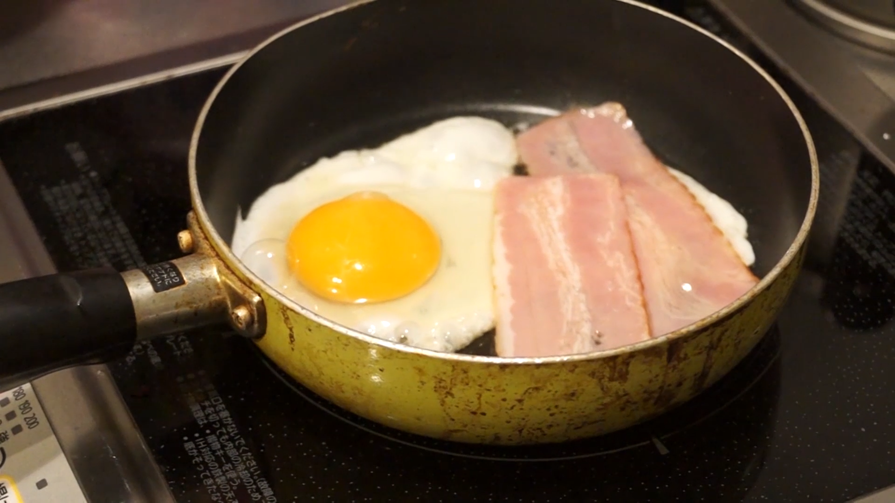

夢であなたと
https://youtu.be/oI6EJupfZykドラマの課題作品で作成しました。
課題のテーマが夢だったので夢に囚われ心酔していく人間を描きました。
ターゲットはホラー、サスペンス、奇妙な話が好きな 10 ～ 30 代を想定しています。
撮影計画表を作成し計画的に撮影しました。
作品時間：6 分 52 秒 制作期間：3ヶ月
撮影機材：VG20 キーワード 悪夢×不思議


悪夢
一番こだわったカットです。
シャワーシーンは当初予定はしていなかったのですが、
撮影を進めるうちに必要だと思い撮影予備日を使って撮影しました。
小道具
時間の流れ、不穏な予兆を表すためユリの花と崩れた盛り塩を用意しました。
ユリの花は主人公が死に近づくにつれ花が咲いていくようにしました。
